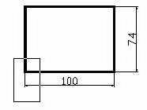

5. Zoom.
1. Escribe ZOOM
2. Utiliza el ratón para trazar una ventana en alguna zona del dibujo.

3. Pulsa la Barra espaciadora para repetir el último comando.
4. Pulsa la tecla P para realizar un zoom previo.
5. Abre la lista de botones del botón y selecciona el botón Zoom ampliar
6. Observa cómo se muestra en la misma barra de herramientas el último botón empleado.
7. Vuelva a abrir la barra y selecciona el botón Zoom todo.
8. Ahora se visualiza el dibujo en su totalidad.
1. Selecciona (Encuadre en tiempo real)
2. Pulsa el botón del ratón en medio de algún dibujo y mueve el cursor.
3. Suelta el botón para completar el ENCUADRE.
4. Pulsa Esc
5. Selecciona (Zoom en tiempo real).
6. Haz lo mismo que antes, pulsando, moviendo el ratón y pulsa Esc cuando acabes.